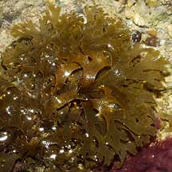
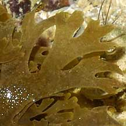
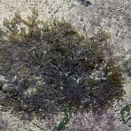
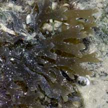
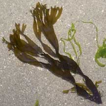
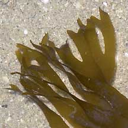
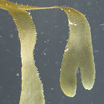
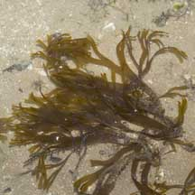
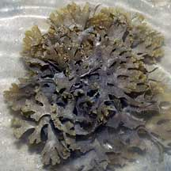
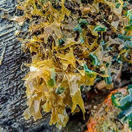

|
|
| brown seaweeds text index | photo index |
| Seaweeds > Division Phaeophyta |
| Y-branch
brown seaweed Dictyota sp.* Family Dictyotaceae updated Jan 13 Where seen? This flat strap-like brown seaweed is sometimes seen on many of our shores, often anchored in bare sand. Features: A bunch of several to many strap-like blades about 1-2cm wide and 10-15cm long, branching on one plane forming Y-shapes with rounded or squarish tips. The seaweed does not have a prominent midrib or vein. Usually a plain translucent brown. In some, the entire clump comprises a few long strands. In others, there are many short strands forming a dense clump. According to AlgaeBase, there are more than 70 current Dictyota species. Human uses: Strap brown seaweed is eaten by people and used as animal feed, medicine for its antibacterial properties. Dictyota dichotoma is also used to make beer, frozen food, fruit juices, ice cream, jellies, in meat and flavour sauces, milk shakes, pastries and salad dressings. Extracts from it are also used in industry as emulsifiers, gelling agents, stabilisers. |
 Labrador, Apr 05  |
 Pulau Sekudu, Aug 06  |
 Changi, Apr 05  |
|
 Berlayar Creek, Feb 12 |
 Tuas, Jun 05 |
 Sentosa, Jun 07 |
*Seaweed species are difficult to positively identify without microscopic examination.
On this website, they are grouped by external features for convenience of display.
| Y-branch brown seaweed on Singapore shores |
On wildsingapore
flickr
|
| Other sightings on Singapore shores |
 Tanah Merah Ferry Terminal, Jun 23 Photo shared by Vincent Choo on facebook. |
| Dictyota
species recorded for Singapore Pham, M. N., H. T. W. Tan, S. Mitrovic & H. H. T. Yeo, 2011. A Checklist of the Algae of Singapore.
|
| Links
References
|